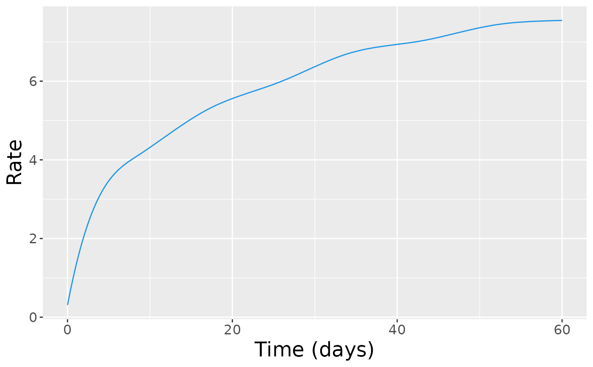
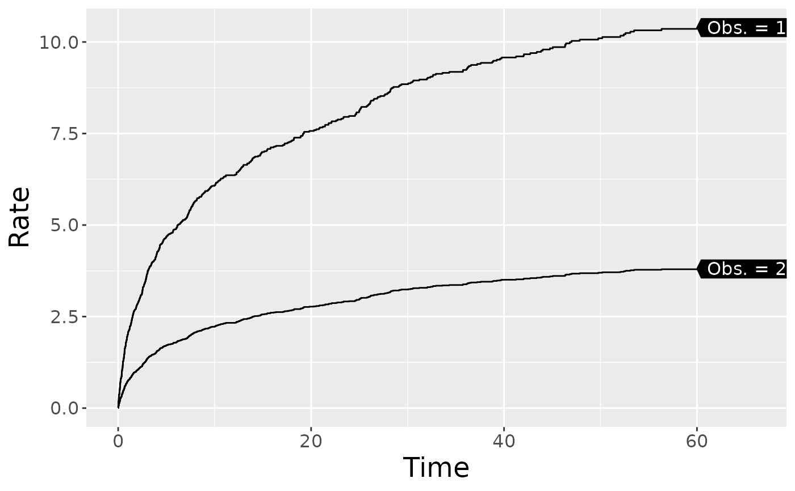
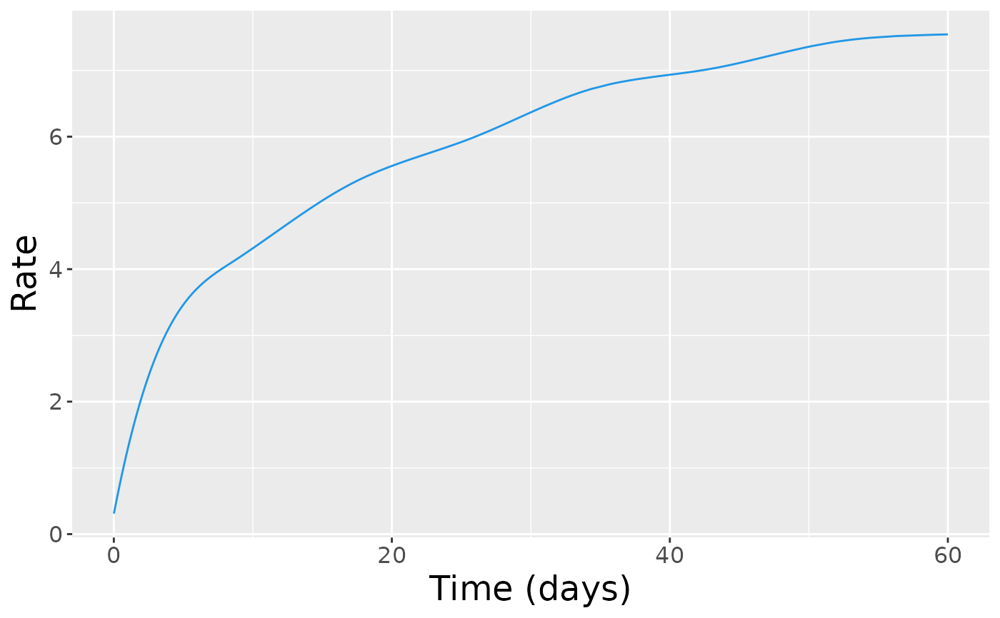
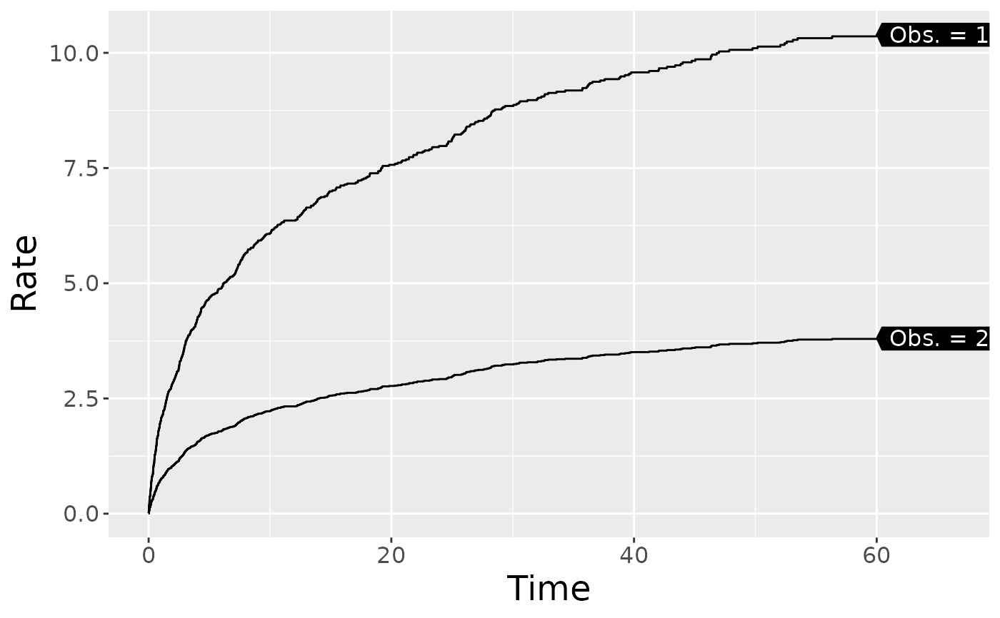

Plot the Baseline Cumulative Rate Function and the Baseline Cumulative Hazard Function
Source:R/plot.R
plot.reReg.RdPlot the baseline cumulative rate function and the baseline cumulative hazard function
(if applicable) for an reReg object.
Arguments
- x
an object of class
reReg, returned by thereRegfunction.- baseline
a character string specifying which baseline function to plot.
baseline = "both"plot both the baseline cumulative rate and the baseline cumulative hazard function (if applicable) in separate panels within the same display (default).
baseline = "rate"plot the baseline cumulative rate function.
baseline = "hazard"plot the baseline cumulative hazard function.
- smooth
an optional logical value indicating whether to add a smooth curve obtained from a monotone increasing P-splines implemented in package
scam.- newdata
an optional data frame contains variables to include in the calculation of the cumulative rate function. If omitted, the baseline rate function will be plotted.
- frailty
an optional vector to specify the shared frailty for
newdata. Ifnewdatais given andfrailtyis not specified, the- showName
an optional logical value indicating whether to label the curves when
newdatais specified.- control
a list of control parameters. See Details.
- ...
additional graphical parameters to be passed to methods.
Value
A ggplot object.
Details
The argument control consists of options with argument defaults to a list
with the following values:
- xlab
customizable x-label, default value is "Time".
- ylab
customizable y-label, default value is empty.
- main
customizable title, default value are "Baseline cumulative rate and hazard function" when
baseline = "both", "Baseline cumulative rate function" whenbaseline = "rate", and "Baseline cumulative hazard function" whenbaseline = "hazard".
See also
Examples
data(simDat)
fm <- Recur(t.start %to% t.stop, id, event, status) ~ x1 + x2
fit <- reReg(fm, data = simDat, B = 0)
plot(fit)
 plot(fit, xlab = "Time (days)", smooth = TRUE)

## Predicted cumulative rate and hazard given covariates
newdata <- expand.grid(x1 = 0:1, x2 = mean(simDat$x2))
plot(fit, newdata = newdata, showName = TRUE)

plot(fit, xlab = "Time (days)", smooth = TRUE)

## Predicted cumulative rate and hazard given covariates
newdata <- expand.grid(x1 = 0:1, x2 = mean(simDat$x2))
plot(fit, newdata = newdata, showName = TRUE)
